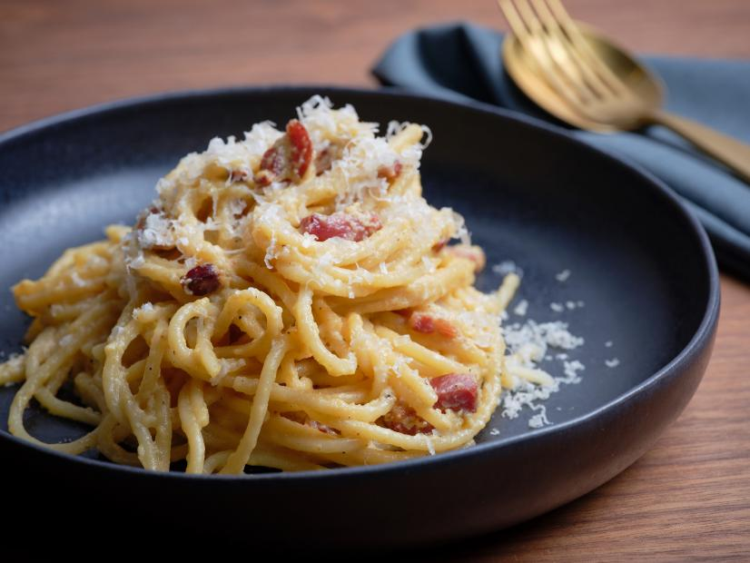

Spaghetti alla Carbonara

Truly Authentic Traditional Italian Carbonara
This dish was created in the Lazio region in the middle of the 20th Century.
In this dish we will not use cream, milk, garlic, onions or other strange ingredients.
we use only guanciale, eggs, pecorino cheese, and lots of black pepper (carbonaro is the Italian for coal miner).
This isn't the Italian-American version, it's the real, creamy carbonara and it comes right from Italy.
Buon appetito!
Ingredients
- 2 teaspoons olive oil
- 1 pound guanciale- diced
- 1 pack spaghetti
- 3 eggs
- 10 tablespoons Pecorino Romano cheese- grated
- salt
- black pepper
Steps
-
Heat the olive oil in a large skillet over medium heat.
Add guanciale and cook until it's evenly brown and crispy, about 5 to 10 minutes.
After cooking drain it on paper towels.
-
Bring a large pot of salted water to a boil.
Cook the spaghetti in the boiling water, stirring occasionally, about 9 minutes.
Drain the spaghetti and return it to the pot to cool.
-
Whisk the eggs, half of the Pecorino Romano cheese and add some black pepper in a bowl until smooth and creamy.
Pour the egg mixture over the pasta, stirring quickly. Add the guanciale and the remaining Pecorino Romano cheese.
Add more black pepper to taste.